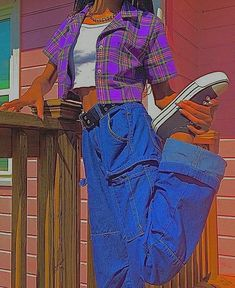
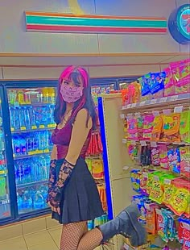
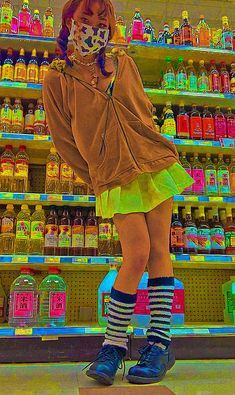

What is the fashion in the 2020s ?
The fashions of the 2020s represent a departure from 2010s fashion and feature a nostalgia for older aesthetics.[1] They have been largely inspired by styles of the late 1990s to mid-2000s, and 1980s.[2][3][4] Early in the decade, several publications noted the shortened trend and nostalgia cycle in 2020s fashion.[5][6][7][8][9] Fashion was also shaped by the COVID-19 pandemic, which had a major impact on the fashion industry, and led to shifting retail and consumer trends.
In the 2020s, many companies, including current fast fashion giants such as Shein and Temu, have been using social media platforms such as TikTok and Instagram as a marketing tool.[10] Marketing strategies involving third parties, particularly influencers and celebrities, have become prominent tactics. E-commerce platforms which promote small businesses,[11] such as Depop and Etsy, grew by offering vintage, homemade, or resold clothing from individual sellers. Thrifting has also exploded in popularity due to it being centered around finding valuable pieces of clothing at a reasonable price.[12]


